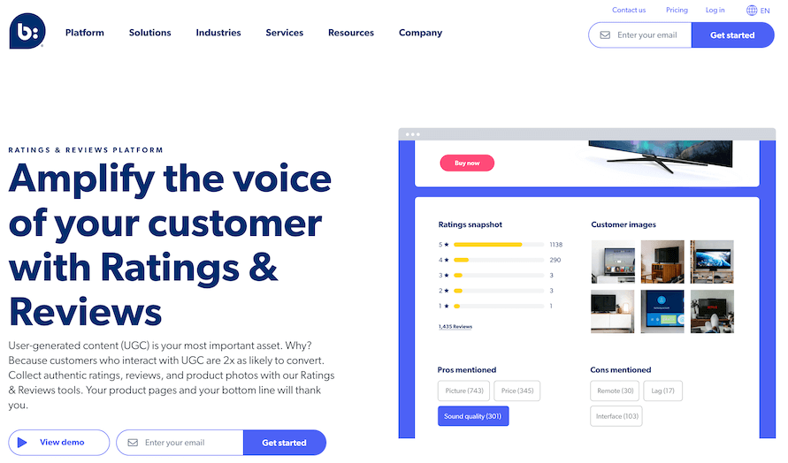
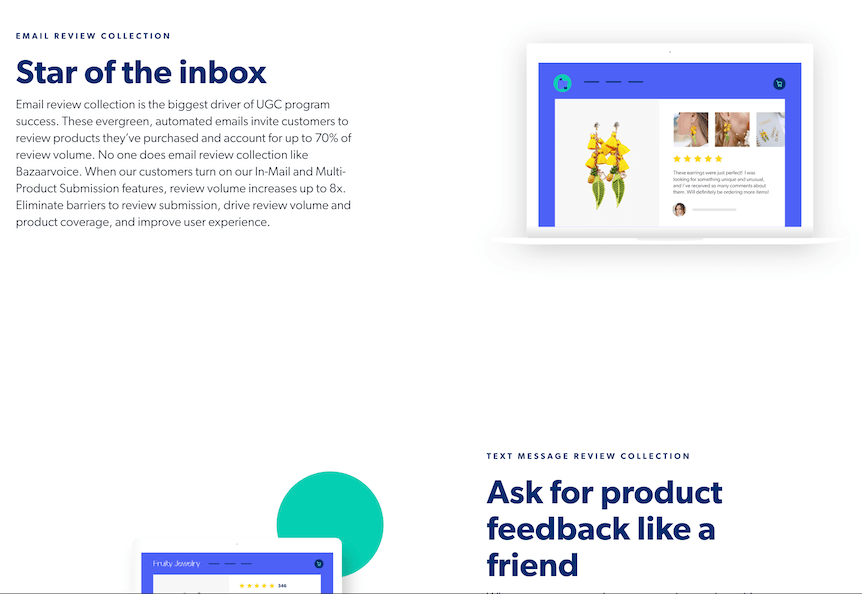
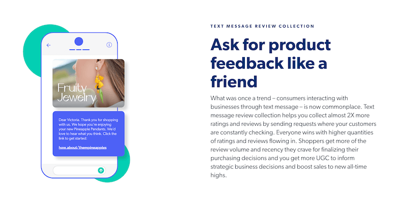
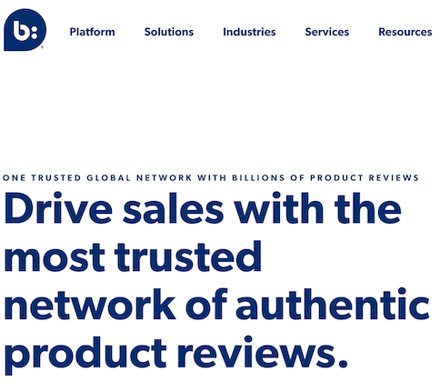
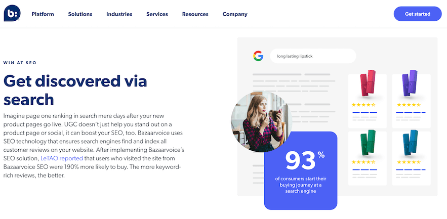
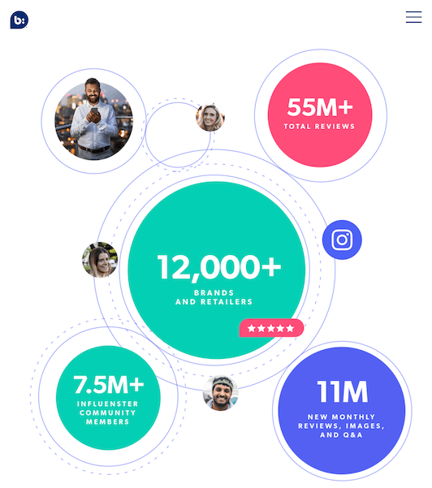
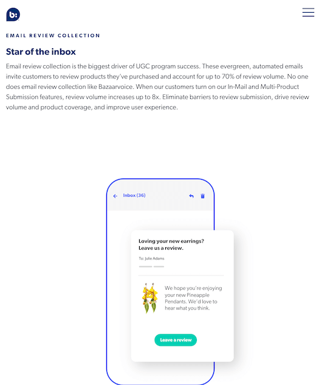
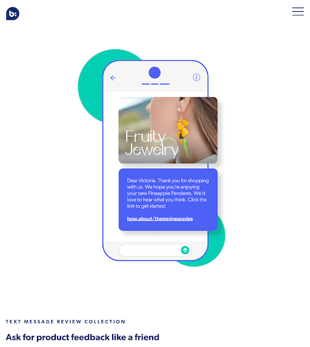

<div id="project">
	<section class="content">
		<div class="block-content">			
			<div class="project-title">
				<h4>Bazaarvoice</h4>
				<p>AI-ML / Enterprise Web / Distributed System</p>
			</div>
			<p class="project-description">At Bazaarvoice, a company specializing in providing user-generated content solutions to help brands and retailers collect and display customer reviews and feedback, I served as a Staff Software Engineer responsible for maintaining the critical "Notification" system. This system acts as the entry point to the lifecycle of Bazaarvoice offerings. I led efforts to implement AI-integrated solutions within this system, significantly enhancing both client and end-user experiences through intelligent automation and improved engagement.</p>
			<div class="project-media">
				
				
				
				
				
				
				
				
				
			</div>        
		</div>
	</section>
 </div>

